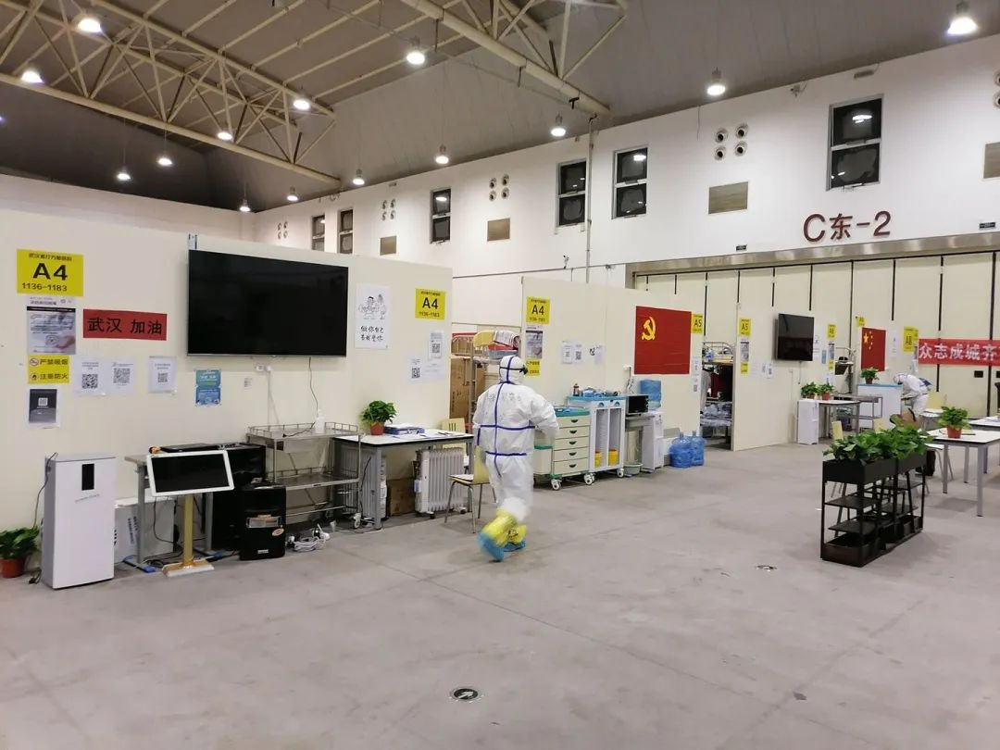

武汉接到两个硬任务：检测全部疑似病例，收治所有确诊病人
原文链接 备份链接 武汉市各区正在加紧把所有发热人员集中隔离，并进行全部发热人员的检测，目的是让疫情全部暴露出来，之后疫情防控也将从“攻坚战”转至“歼灭战” 图/法新 文 |《财经》特派武汉记者 言清 王小 编辑 | 王小 “今天的会非 …
七、舱，生
前言：有几个好友问两三天没更了，还喘气吧。我说活蹦乱跳着，手机码字比较累，缓一缓，这是一个原因；还有一个，文字若能平实展示这个时代的一二，才不失意义，但有被404的风险。
1、终极的问题
此疫的重点是控制传染源，之后才是对病患的救治。古代社会甚至当代的非洲部分战乱国家，基于烈性传染病的处理原则就是如果问题没法解决就解决有问题的人；但是当代无论是基于普世价值观、医务人员的职业操守及大众的舆情都不可能这么操作。上峰所需的便是在控制与救治间寻找平衡，基于这种后知后觉，大WH的方舱医院雨后春笋般建立并住满病号，同时调集全国各地的医护前来支援——我发自真心的感叹只有这种体制能如此高效运转。
我所在的舱子貌似在9号建立，经历两次夜班大部分病人都在安睡，偶尔处理的也是一些小问题；直到几天前的白班和上半夜班，当班的医生每人需要管理大概100个病号，通过与大部分患者的交流，可对其心理特征作出粗略的画像。
 很多人，都没想到会有这么一个过集体生活的时期
很多人，都没想到会有这么一个过集体生活的时期

我明明好了，为什么还要进来？
您虽然好了，但这个病还有传染性，要住里头保护外面的健康人群。
进来也没有药，也不检查，还要在里面干嘛？
这个病啊，没有症状就是向好了，吃药没准还有副作用，检查资源紧张但会给你尽快安排，您住里面就是为国家做贡献——听到这句话，所有的怨念都能化解，大部分人的思想还是朴素的。
我9号就进来了，旁边的人都查了两次核酸，为什么我一直没查！
检查资源有限，前几天统筹的不好，我们今天已经优先开出9号入舱至今没检查的。
那为什么我没排到？
呃，今天的名额用光了……
当天的早上，隔着厚厚的隔离服，与一大堆人扯着检查安排的问题，偶尔还有群情激愤的趋势；我想着一堆确诊患者近距离的口水喷溅，咳嗽，甚至有人拉着你的防护服，不禁起了一身鸡皮疙瘩。换衣服出门后，要经过一道喷淋含氯消毒剂的过程，我和喷水的工作人员说脸和头也喷一下吧；工作人员说，不可以，会灼伤皮肤眼睛的，我说我把眼睛闭了，喷点心理安慰吧。
我这样就出院了，我感觉还是不舒服，要不再让我住几天？
咱们出院要满足两次核酸阴性，CT检查病灶有吸收才可以。出去了也要继续隔离2周，会有社区继续跟进的，不用太过担心。
广为流传的舱内广场舞确有其事，但那是刻意为之，否则如何引导公众的情绪呢——当出现一个没法控制的热点，最好的方法是制造一个新的热点。
和当班的兄弟商量，早班这种工作量太惨了。于是，和管理部门商量不断地优化流程，何时检查、安排出院，到了我们上另一个班（上半夜的），那种围着你质问的情况基本没了。而后，建立的医患交流群，更是缓解了无数紧张焦虑。得益于新的网络传媒，将处于变量的危机消弭于萌芽。
入夜之后，一切归于沉寂
病人看到我们在忙，会小心翼翼站在旁边等待。有个病人咨询一个问题，说有个三月大小孩，爸爸得这个病si了，孩子居家隔离了14天一直没事，在第十七天突然发热了，问我该怎么办。我说这怎么行，一定要去医院查个核酸，你得打电话报告啊；她红着眼说小孩在HK，那边没得查，去趟医院也难。我想起HK貌似还有医护罢工的新闻，摇了摇头说按理说隔离期间没发热也有可能是感冒着凉，先给小孩找点头孢吃，实在不行再去医院吧。
除非是整家子一起进舱的，在涉及到家人亲友话题的时候，都变的些许麻木，有的很早就没了，有的没了消息，有些人可能连进统计数字的资格都没有。套用一位敢言耿直的同行，这个事最后肯定会庆功，但没什么波澜壮阔，有的只是闹剧和惨剧。

 一个是大部分病人心念念的出口，一个是医护人员翘首以盼的出口，各有各的围城。
一个是大部分病人心念念的出口，一个是医护人员翘首以盼的出口，各有各的围城。
我从哪来，我在哪，我将向何处？
这样的焦虑其实一直萦绕心头。我想起老催的歌词：
你说我世上最坚强，我说你世上最善良
你问我将去向何方，我指着大海的方向
原文链接 备份链接 武汉市各区正在加紧把所有发热人员集中隔离，并进行全部发热人员的检测，目的是让疫情全部暴露出来，之后疫情防控也将从“攻坚战”转至“歼灭战” 图/法新 文 |《财经》特派武汉记者 言清 王小 编辑 | 王小 “今天的会非 …
原文链接 备份链接 武汉封城之初遇上医疗挤兑，“居家隔离”政策随之推出。但社区资源和能力未匹配，反而加重家庭内部交叉传染。这是武汉病例此后暴增的主要原因。 纠错政策姗姗来迟，10天后的2月2日，“居家隔离”变为“集中隔离”。但初期隔离 …
原文链接 备份链接 2月14日晚上十一点多，高师傅和其他五位护工终于不再无“家”可归。 曾经的“家”是在医院，他们所照顾的病人病床旁的折叠床上。作为武汉中心医院南京路院区的一名护工，高师傅一天24小时都在医院。春节那三天会有三倍工资，所以 …
原文链接 备份链接 方舱医院患者出院还是比较快的，这样周转起来，就可以接收大量的病人，可以做到“应收尽收”。 文 | 黄 祺 13天前，武汉新冠肺炎疫情仿如“暗夜”——社区还有大量感染者未能得到诊断，他们如果得不到及时的治疗，病情很可能 …
原文链接 备份链接 “我们社区的最后一名确诊病人今天终于住进医院，总算完成一项‘清零’任务。”2月13日17时接到电话，武汉江汉区的社区书记王建军长长地嘘出了一口气。 电话是社区一位患病的爹爹从医院打来的，他和患病的老伴在武汉红十字会医院 …